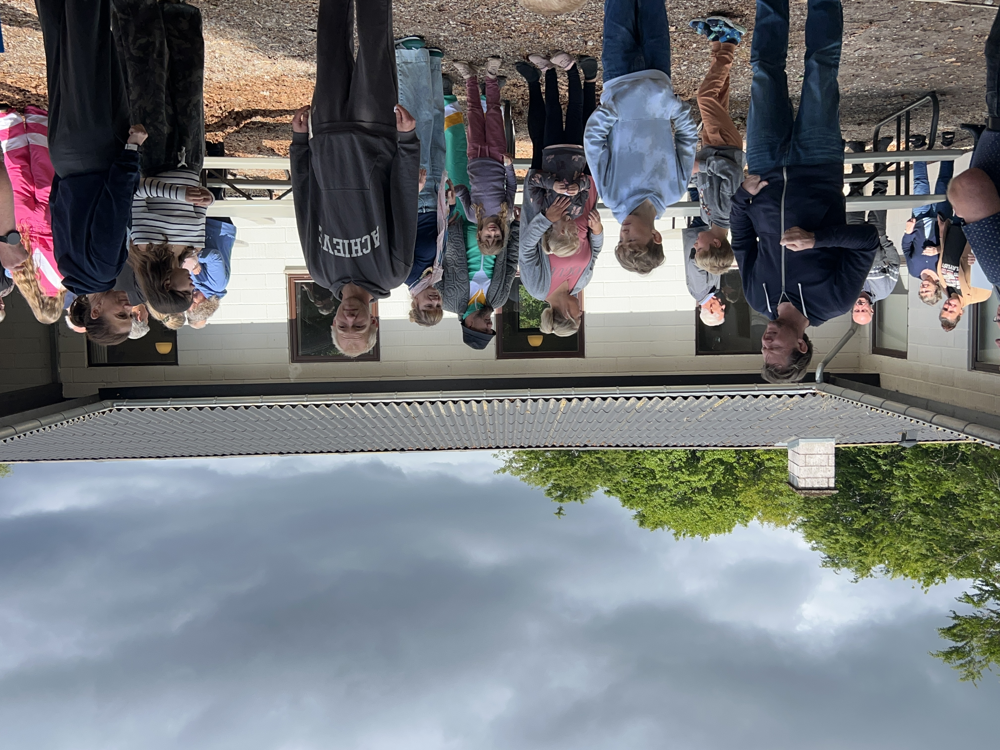
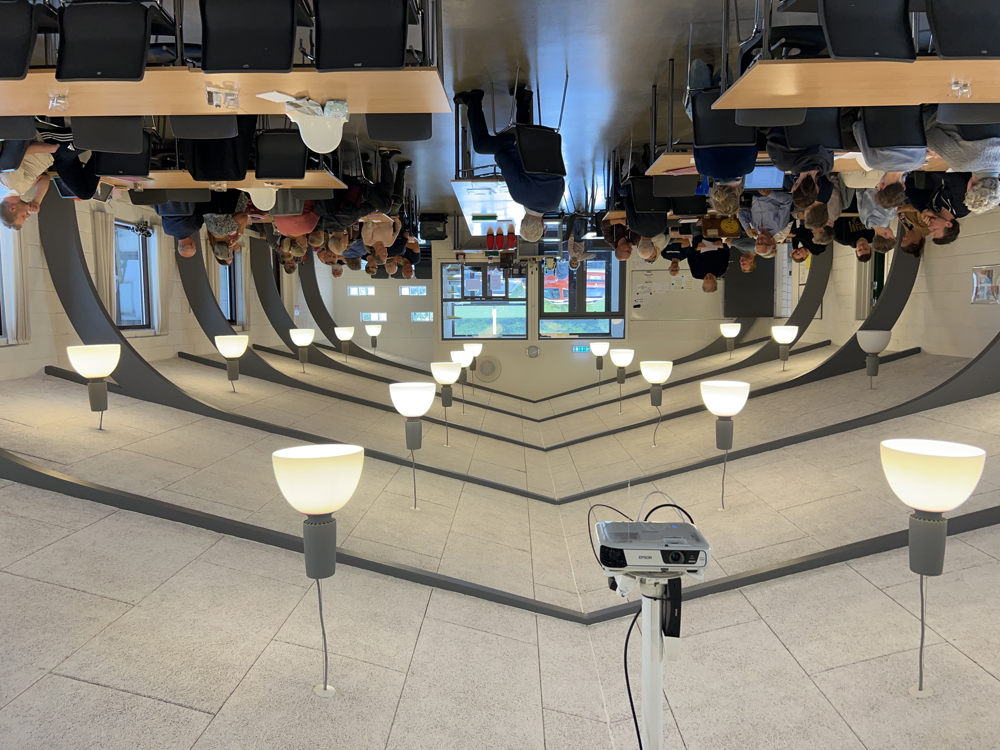
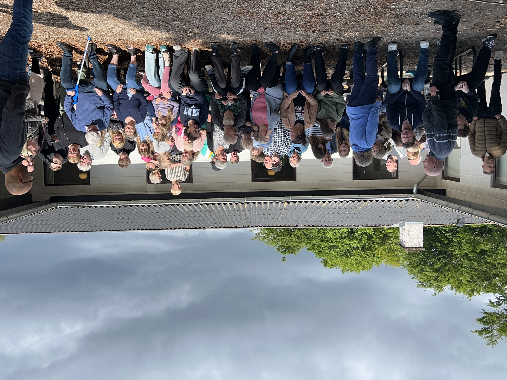

Årsarkiv · 2025
— Tonneshøj, Haderslev
Billeder fra weekenden




Klik på et billede for at se det i fuld størrelse
Referat
I pinseweekenden 23.–25. maj 2025 samledes Olsen-klanen på Tonneshøj ved Haderslev til årets store skovtur. Stedet er omgivet af Haderslev Skov og den brede Haderslev Fjord — et naturskønt sted der indbyder til både ro, fællesskab og frisk luft.
Fredag eftermiddag ankom de første familier og fik slået lejren op. Aftenen gik med ankomst, grillmad og de første lange samtaler. Lørdag var den store dag med fælles morgenmad, en guidet vandring i skoven og eftemiddagstid ved vandet. Om aftenen holdt klanen generalforsamling inden aftensmaden.
"Her er der plads til at vi er noget for hinanden — ikke bare ved siden af hinanden."
— Fra weekenden på TonneshøjSøndag formiddag var der frokost og oprydning inden hjemrejsen. Alle var enige om, at Tonneshøj var et fremragende valg og at traditionen med den fælles skovtur er en af klanens vigtigste samlingspunkter.
Generalforsamlingsreferat
Arrangementskomiteen genvalgt for 2026. Sted for 2026 afklares inden september. Forslag om årets præmie/udfordring vedtaget.
Skovtur 2025
Hvem var med